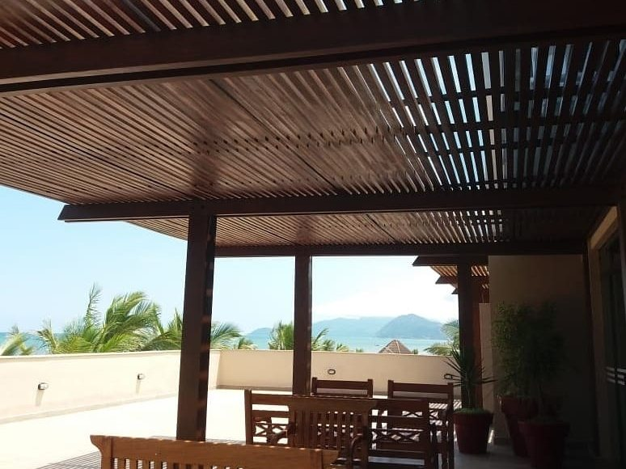
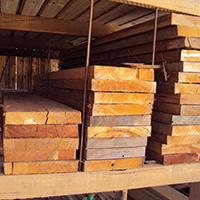
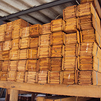
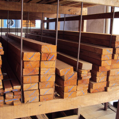
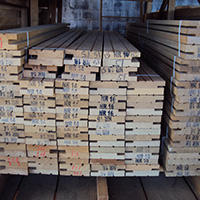
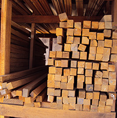
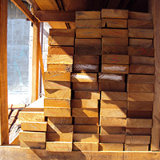

Madeira para telhado, telhas, pergolados e decks.
Do madeiramento do telhado ao deck instalado. Cada cliente é orientado pelos nossos vendedores sobre o melhor custo-benefício para a sua obra.
Tudo para o telhado e para a área externa.
Madeira para telhado
Terças, caibros, ripas e vigas, na espécie e na bitola certas para o vão.
Ver a página →Telhas
Cerâmica, cimento, esmaltada, vidro, PET e fibrocimento, e o acabamento do telhado.
Pedir orçamento →Pergolados e decks
Sob medida, com instalação. Degraus e espaços gourmet nas medidas do seu projeto.
Pedir orçamento →Forros, portas e batentes
Forros, tabuados, chapeados, portas e batentes de fabricação própria, além de mantas, vernizes e pregos.
Pedir orçamento →Do seu projeto ao orçamento, numa conversa.
Conte pelo WhatsApp o que você vai construir e as medidas do projeto. O vendedor indica a madeira com o melhor custo-benefício para a sua obra.
Pedir orçamento pelo WhatsApp(12) 97405-2842 · segunda a sexta, das 7h50 às 17h30
Conversa ilustrativa
Desde 2001, a verdade como pilar.
Em 2001, um dos irmãos Martinelli revendia telhas em Tambaú (SP) quando um fornecedor ofereceu a ele a madeireira que tinha em São José dos Campos. O negócio foi fechado, e os irmãos assumiram a loja.
Nos primeiros anos, cuidando de tudo sozinhos, aprenderam o mercado de perto e descobriram o que sustenta a casa até hoje: falar a verdade em cada venda. Daí vem o lema que está na marca: confiança e honestidade, sempre.

A verdade é o pilar que sustenta, conquista e fideliza os nossos clientes.
Por que existimos
Entregar a confiança e a honestidade necessárias, com os melhores produtos para a construção, a cada cliente.
Aonde queremos chegar
Ser reconhecida pelos clientes da região como uma das melhores empresas da construção civil.
Nosso diferencial
Cada cliente é orientado pelos nossos vendedores sobre o melhor custo-benefício para a sua necessidade.
Fornecedores
Uma relação boa e duradoura com os fornecedores, que dá força à negociação com o cliente.
Nossos pilares
- Confiança
- Honestidade
- Verdade
- Respeito ao cliente
- Ética
- Transparência
- Humildade
- Equipe comprometida
- Relação forte com o cliente
Madeira com origem
Nossa madeira nativa é regularizada pelo Ibama através do DOF, o Documento de Origem Florestal, que acompanha a madeira do pátio até a sua obra. Quando for comprar madeira, exija o DOF.
Código Florestal, Lei 12.651/2012, art. 36O pátio






O que os clientes dizem.
Vendedoras citadas pelo nome, que explicam e ajudam a escolher a madeira.
Clientes contam que cotaram outras madeireiras antes de fechar.
Material entregue no dia combinado, com cuidado na descarga.
Segunda a sexta, das 7h50 às 17h30.
- EndereçoAv. João Batista de Souza Soares, 3001
Cidade Morumbi · São José dos Campos - SP - WhatsApp(12) 97405-2842
- Telefone(12) 3931-5699
Peça o orçamento da sua obra.
Falar pelo WhatsApp